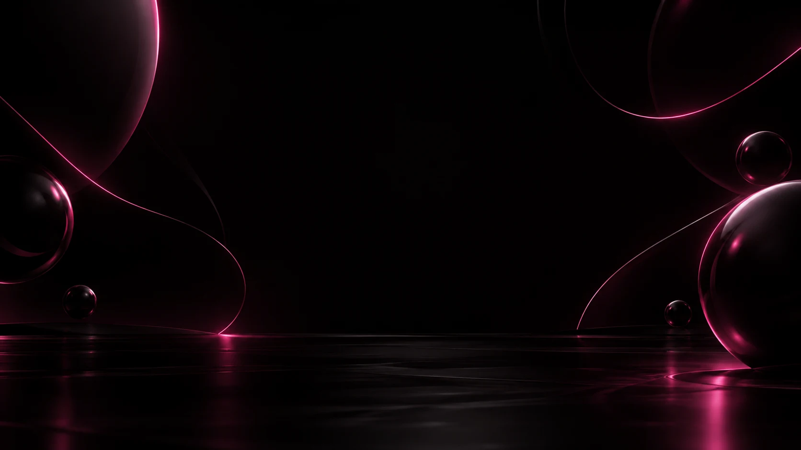
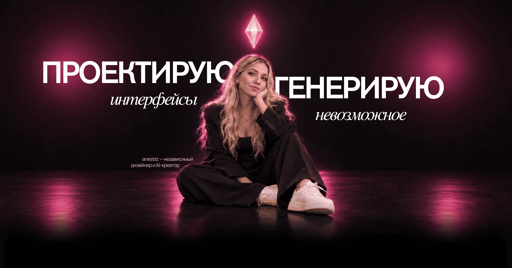

I design digital products
and create AI visuals — from the first idea
to the final frame.



Four clear stages: we define the brief, choose a direction, create the solution, and prepare the final delivery.
We discuss the goal, audience, available materials, timeline, and scope.
We align on the structure, concept, or visual approach.
I develop the work and share progress at the agreed stages.
I apply the agreed revisions and deliver the materials in the required formats.
Working in design since 2021. I combine product interfaces, team leadership, and AI creative — from the first user flow to the final frame.
Customer relationship development and personalized offers. Since 2024 I have led a design team while staying hands-on.
At CodeAxolot I spent two years combining three roles: project manager, designer, and AI creator. The work brought together project management, design, and AI content creation.
Work on user interfaces and flows — building UX/UI practice and digital product experience.
The start of my professional path. Working with graphics and printed materials.
From product design to the final frame — one connected workflow.
I'm anestiiz — a UX/UI designer, design lead, and AI creator.
My experience combines product design, team leadership, project management, and AI content. At MTS I grew from UX/UI Designer to Design Lead, while at CodeAxolot I combined project management, design, and AI creation.
From the first user flow to the final frame, what matters to me is how the whole experience comes together.

Different stories, styles, and formats — with a clear creative direction from the first idea to the final cut.
Thoughtful flows and expressive interfaces that make a mobile product feel intuitive.
A clear structure and visual identity that work equally well on desktop and mobile.
I use AI to explore visual directions, create images and video, and iterate quickly. I own the concept, logic, selection, and final refinement, checking every asset for purpose, consistency, and detail.
We live in a moment when the speed of an idea matters more than its scale. What once took weeks can now move from idea to presentation in an evening without losing quality.
The market has accelerated: users expect a product that looks and works like a top App Store release, not a first MVP. AI makes that level possible with a much leaner process.
Today one designer with the right AI stack can cover research, copy, identity, UI kit, prototype, and motion in the time it takes a team to write a brief.
AI without experience produces polished visuals without logic. Experience without AI is slower and more expensive. The value is in combining both with product thinking.
AI generates variants; I cut the noise, keep what works for the client's goal, and shape it into one coherent product with a single voice.
Clients have access to the same AI tools — but not to taste, visual literacy, or product thinking. AI produces plenty of “correct” but cannot tell “correct” from “on point.”
Without that lens you get an average product with an AI sheen. With me you get a product with character, logic, and confidence in every pixel.
Research is 3–5× faster. Identity is built in a day. Copy and tone are tuned to the audience from the start. Motion, illustration, and 3D live where placeholders used to sit.
The result: the client pays not for hours but for outcome — a product at a level that pays for itself on the first launch.
I'll review the brief and get in touch to clarify the details and suggest the next step.